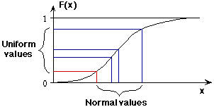

We noted earlier that the winning time in each year corresponds to the minimum of the rectangularly distributed pseudo-random numbers for the 'pool' of n elligible competitors. The cumulative distribution function that we use to model the winning times translates this minimum rectangularly value into an actual winning time.

As a result, if the winning time in a year is better than in any previous year, its underlying rectangular pseudo-random value must have also been lower than those that were used to generate the winning times in previous years.
The number of 'records' in a simulation can therefore be determined from the rectangular pseudo-random values that were used to generate the winning times. Since the number of 'records' therefore does not depend on the distribution that is used to generate the actual winning times from the rectangular values, our conclusions do not depend on the shape of the population distribution that we assume for running times
Our assumption of normality does not therefore affect our conclusion that changes in population size alone cannot explain the number of records that occurred.